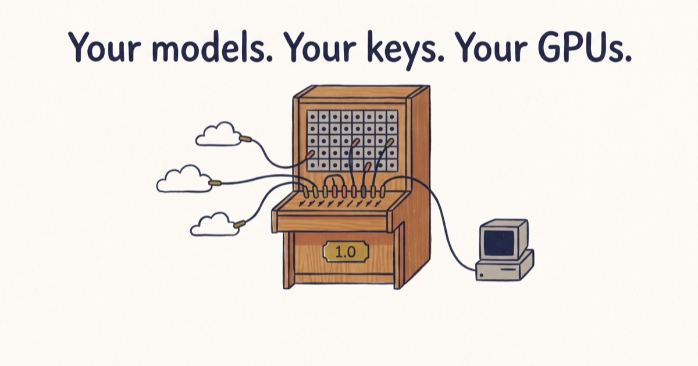
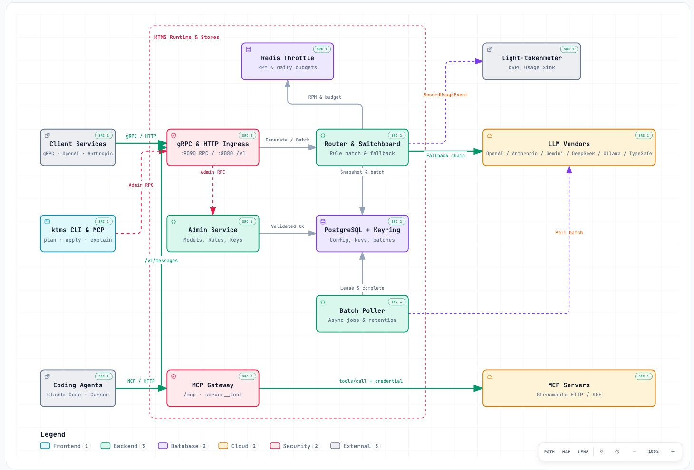

Jedna bramka dla każdego wywołania LLM
Keystone (KTMS) to bramka LLM open source do samodzielnego hostowania. Serwisy proszą o poziom wysiłku zamiast o model; Keystone trzyma klucze dostawców, wybiera łańcuch modeli, przełącza się przy awariach i pilnuje limitów zapytań i kosztów.
Zaczął jako proxy LLM w snappyloop i stał się samodzielnym produktem, zbudowanym w tym samym modelu dostarczania AI-native: jeden plik binarny Go z gRPC, API zgodnym z OpenAI i Anthropic oraz bramką MCP, około 7 MiB pamięci w spoczynku i poniżej milisekundy dodatkowego opóźnienia.
Problemy eksploatacyjne LLM na produkcji rozwiązuje bramka, a nie każdy serwis osobno: twarde limity kosztów na klucz, użytkownika końcowego i zespół, rezerwowane atomowo przed każdym wywołaniem; circuit breakery dla każdego dostawcy i łańcuchy fallback; lokalne węzły inferencji na nieużywanych Macach i maszynach z GPU z fallbackiem do chmury; podpisane wydania z SBOM i SLSA provenance.
Wokół niego: light-tokenmeter do raportów użycia, konsola webowa ktms-admin i wtyczka do Claude Code, której skills oceniają, wdrażają i integrują bramkę — z CI, które pada, gdy skill wymienia polecenie nieistniejące w wydaniu.

